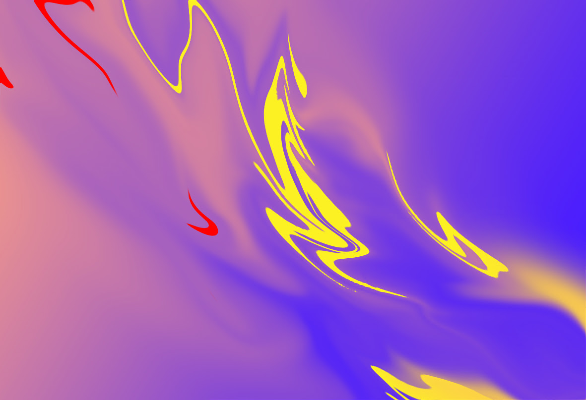
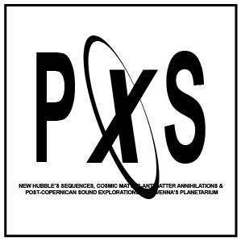

Marja Ahti | Paradoxes#45
4.9.2019
Planetario di Ravenna
21.30
Marja Ahti è un’artista svedese-finlandese che lavora con field recording e altro materiale sonoro acustico combinato con sintetizzatori e feedback. Athi indaga il confine dove i suoni iniziano a parlarsi, creando narrazioni musicali sospese tra dimensione acustica e documentaristica, composizioni di textures al ralenti e battimenti microtonali.
Planetario – Viale Santi Baldini, 4/A, Ravenna
Ingresso 8€
Paradoxes#45 è a cura di Orthographe e MU ed è parte di Paradoxes.
